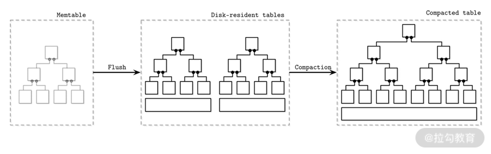

- 00 开篇词 吃透分布式数据库，提升职场竞争力.md.html
- 01 导论：什么是分布式数据库？聊聊它的前世今生.md.html
- 02 SQL vs NoSQL：一次搞清楚五花八门的“SQL”.md.html
- 03 数据分片：如何存储超大规模的数据？.md.html
- 04 数据复制：如何保证数据在分布式场景下的高可用？.md.html
- 05 一致性与 CAP 模型：为什么需要分布式一致性？.md.html
- 06 实践：设计一个最简单的分布式数据库.md.html
- 07 概要：什么是存储引擎，为什么需要了解它？.md.html
- 08 分布式索引：如何在集群中快速定位数据？.md.html
- 09 日志型存储：为什么选择它作为底层存储？.md.html
- 10 事务处理与恢复（上）：数据库崩溃后如何保证数据不丢失？.md.html
- 11 事务处理与恢复（下）：如何控制并发事务？.md.html
- 12 引擎拓展：解读当前流行的分布式存储引擎.md.html
- 13 概要：分布式系统都要解决哪些问题？.md.html
- 14 错误侦测：如何保证分布式系统稳定？.md.html
- 15 领导选举：如何在分布式系统内安全地协调操作？.md.html
- 16 再谈一致性：除了 CAP 之外的一致性模型还有哪些？.md.html
- 17 数据可靠传播：反熵理论如何帮助数据库可靠工作？.md.html
- 18 分布式事务（上）：除了 XA，还有哪些原子提交算法吗？.md.html
- 19 分布式事务（下）：Spanner 与 Calvin 的巅峰对决.md.html
- 20 共识算法：一次性说清楚 Paxos、Raft 等算法的区别.md.html
- 21 知识串讲：如何取得性能和可扩展性的平衡？.md.html
- 22 发展与局限：传统数据库在分布式领域的探索.md.html
- 23 数据库中间件：传统数据库向分布式数据库的过渡.md.html
- 24 现状解读：分布式数据库的最新发展情况.md.html
- 加餐1 概念解析：云原生、HTAP、图与内存数据库.md.html
- 加餐2 数据库选型：我们该用什么分布式数据库？.md.html
- 捐赠
09 日志型存储：为什么选择它作为底层存储？
在上一讲中，我们学习了存储引擎的逻辑概念与架构。这些概念和架构都是总结了数个存储引擎的特点后，勾勒出的高度抽象的形象。目的是帮助你对数据库存储引擎，特别是分布式数据库存储引擎有一个总体认识，从而建立起一个知识体系。
但是，只有高度抽象的内容，而没有具体的案例，对于理解相关概念是远远不够的。这一讲，我将以经典日志合并树（LSM 树）——这个典型的日志型存储引擎为切入点，为你直观展示存储引擎的设计特点；同时我会解释为什么此类存储引擎特别适合于分布式数据库。
那么，我们首先开始介绍 LSM 树的结构特点。
LSM 树的结构
LSM 树存储引擎的结构暗含在它的名字内。LS 代表日志结构，说明它是以日志形式来存储数据的，那么日志有什么特点呢？如果你对财务记账有些了解的话，会知道会计在删除一笔记录时，是不会直接拿着橡皮擦去擦掉这个记录的，而是会写一笔与原金额相等的冲抵操作。这就是典型的日志型存储的模式。
日志型存储的特点是对写入非常友好，不像 B 树等结构需要进行随机写，日志存储可以进行顺序性写。因为我们常用的 HDD 磁盘是有旋转机构的，写入延迟主要发生在磁盘旋转与读写臂的移动上。如果数据可以顺序写入，可以大大加快这种磁盘机构的写入速度。
而 M 则暗含这个结构会存在合并操作，形成最终的可读取结构。这样读取操作就不用去查找对于该记录的所有更改了，从而加快了读取速度。同时将多个记录合并为一个最终结果，也节省了存储空间。虽然合并操作有诸多优点，但是它也不是没有代价的，那就是会消耗一定的计算量和存储空间。
现在让我们开始详细介绍 LSM 树的结构。
LSM 树包含内存驻留单元和磁盘驻留单元。首先数据会写入内存的一个缓冲中，而后再写到磁盘上的不可变文件中。
内存驻留单元一般被称为 MemTable（内存表），是一个可变结构。它被作为一个数据暂存的缓冲使用，同时对外提供读取服务。当其中的数据量到达一个阈值后，数据会被批量写入磁盘中的不可变文件内。
我们看到，它最主要的作用是将写入磁盘的数据进行排序，同时批量写入数据可以提高写入的效率。但是数据库一旦崩溃，内存中的数据会消失，这个时候就需要引入“07 | 概要：什么是存储引擎，为什么需要了解它”中提到的提交日志来进行日志回放，从而恢复内存中的数据了。但前提是，数据写入内存之前，要首先被记录在提交日志中。
磁盘驻留单元，也就是数据文件，是在内存缓冲刷盘时生成的。且这些数据文件是不可变的，只能提供读取服务。而相对的，内存表同时提供读写两个服务。
关于 LSM 树的结构，一般有双树结构和多树结构两种。前者一般是一个理论说明，目前没有一个实际的存储引擎是使用这种结构的。所以我简单说一下双树概念，它有助于你去理解多树结构。
双树中的两棵树分别指：内存驻留单元和磁盘驻留单元中分别有一棵树，你可以想象它们都是 B 树结构的。刷盘的时候，内存数据与磁盘上部分数据进行合并，而后写到磁盘这棵大树中的某个节点下面。成功后，合并前的内存数据与磁盘数据会被移除。
可以看到双树操作是比较简单明了的，而且可以作为一种 B 树类的索引结构而存在。但实际上几乎没有存储引擎去使用它，主要原因是它的合并操作是同步的，也就是刷盘的时候要同步进行合并。而刷盘本身是个相对频繁的操作，这样会造成写放大，也就是会影响写入效率且会占用非常大的磁盘空间。
多树结构是在双树的基础上提出的，内存数据刷盘时不进行合并操作，而是完全把内存数据写入到单独的文件中。那这个时候另外的问题就出现了：随着刷盘的持续进行，磁盘上的文件会快速增加。这时，读取操作就需要在很多文件中去寻找记录，这样读取数据的效率会直线下降。
为了解决这个问题，此种结构会引入合并操作（Compaction）。该操作是异步执行的，它从这众多文件中选择一部分出来，读取里面的内容而后进行合并，最后写入一个新文件中，而后老文件就被删除掉了。如下图所示，这就是典型的多树结构合并操作。而这种结构也是本讲介绍的主要结构。

最后，我再为你详细介绍一下刷盘的流程。
首先定义几种角色，如下表所示。

数据首先写入当前内存表，当数据量到达阈值后，当前数据表把自身状态转换为刷盘中，并停止接受写入请求。此时会新建另一个内存表来接受写请求。刷盘完成后，由于数据在磁盘上，除了废弃内存表的数据外，还对提交日志进行截取操作。而后将新数据表设置为可以读取状态。
在合并操作开始时，将被合并的表设置为合并中状态，此时它们还可以接受读取操作。完成合并后，原表作废，新表开始启用提供读取服务。
以上就是经典的 LSM 树的结构和一些操作细节。下面我们开始介绍如何对其进行查询、更新和删除等操作。
查询、更新与删除操作
查询操作本身并没有 LSM 树的特色操作。由于目标数据可能在内存表或多个数据表中，故需要对多个数据源的结果数据进行归并操作。其中使用了排序归并操作，原因也非常简单，因为不论是内存表还是数据表，其中的数据都已经完成了排序。排序归并算法广泛应用在多种数据库中，如 Oracle、MySQL，等等。另外数据库中间 Apache ShardingShpere 在处理多数据源 order by 时，也使用了这个方法。感兴趣的话你可以自行研究，这里我就不占用过多篇幅了。
而查询另外一个问题是处理同一份数据不同版本的情况，虽然合并操作可以解决部分问题，但合并前的数据还需要通过查询机制来解决。我刚介绍过 LSM 树中对数据的修改和删除本质上都是增加一条记录，因此数据表和内存表中，一份数据会有多条记录，这个时候查询就需要进行冲突处理。一般一份数据的概念是它们具有相同的 key，而往往不同的版本会有时间戳，根据这个时间戳可以建立写入顺序，这类似于向量时钟的概念。故查询中我们很容易判断哪条数据是最新数据。
更新和删除操作本质上是插入数据，然后根据上面提到的冲突处理机制和合并操作来获取最终数据。更新操作是比较简明的，插入新数据就好了。但是删除操作时插入的是什么呢？
一般插入的是特殊的值，被称作墓碑（Tombstone）。它是一个特殊的值，用来表示记录被删除。如果要产出一个范围内数据呢？Apache Cassandra 的处理方法是引入范围墓碑（Range Tombstone）。
比如有从 k0 到 k9 的 9 条数据，在 k3 处设置开始删除点（包含 k3），在 k7 处设置结束删除点（不包含 k7），那么 k3 到 k6 这四条数据就被删除了。此时查询就会查不到 k4 到 k6，即使它们上面没有设置墓碑。
以上我们介绍了 LSM 树中最基本的操作，下面我再为你介绍一种非常特殊的操作，那就是合并操作。
合并操作
合并操作是用来维护 LSM 树的结构的，以保证其可以正常运行。需要强调的一点是，我们这里说的合并操作针对的是 LSM 树的结构里面提到的多树结构。在多树结构中，磁盘中表的数量随着刷盘动作的持续进行，而变得越来越多。合并操作正是让它们减少的一种手段。
合并操作会根据一定规则，从磁盘的数据文件中选择若干文件进行合并，而后将新文件写入磁盘，成功后会删除老数据。在整个操作的过程中，对内存的消耗是完全可控的。这是由于每个数据文件都是经过排序的，如上一讲提到的查询规则一样，我们依然可以通过排序归并来合并多个文件中的数据。这种合并每次只会加载部分数据，也就是每个文件头部的数据，进入内存进行合并操作。从而很好地控制了合并操作对内存资源的消耗。
在整个合并的过程中，老的数据表依然可以对外提供读取服务，这说明老数据依然在磁盘中。这就要求磁盘要留有一定的额外空间来容纳生成中的新数据表。同时合并操作可以并行执行，但是一般情况下它们操作的数据不会重合，以免引发竞争问题。合并操作既可以将多个数据文件合并成一个，也可以将一个数据文件拆分成多个。
常见的合并策略有 Size-Tiered Compaction 和 Leveled Compaction。
Size-Tiered Compaction
下图就是这种策略的合并过程。

其中，数据表按照大小进行合并，较小的数据表逐步合并为较大的数据表。第一层保存的是系统内最小的数据表，它们是刚刚从内存表中刷新出来的。合并过程就是将低层较小的数据表合并为高层较大的数据表的过程。Apache Cassandra 使用过这种合并策略。
该策略的优点是比较简单，容易实现。但是它的空间放大性很差，合并时层级越高该问题越严重。比如有两个 5GB 的文件需要合并，那么磁盘至少要保留 10GB 的空间来完成这次操作，可想而知此种容量压力是巨大的，必然会造成系统不稳定。
那么有没有什么策略能缓解空间放大呢？答案就是 Leveled Compaction。
Leveled Compaction
如名称所示，该策略是将数据表进行分层，按照编号排成 L0 到 Ln 这样的多层结构。L0 层是从内存表刷盘产生的数据表，该层数据表中间的 key 是可以相交的；L1 层及以上的数据，将 Size-Tiered Compaction 中原本的大数据表拆开，成为多个 key 互不相交的小数据表，每层都有一个最大数据量阈值，当到达该值时，就出发合并操作。每层的阈值是按照指数排布的，例如 RocksDB 文档中介绍了一种排布：L1 是 300MB、L2 是 3GB、L3 是 30GB、L4 为 300GB。
该策略如下图所示。

上图概要性地展示了从 L1 层开始，每个小数据表的容量都是相同的，且数据量阈值是按 10 倍增长。即 L1 最多可以有 10 个数据表，L2 最多可以有 100 个，以此类推。
随着数据表不断写入，L1 的数据量会超过阈值。这时就会选择 L1 中的至少一个数据表，将其数据合并到 L2 层与其 key 有交集的那些文件中，并从 L1 中删除这些数据。
仍然以上图为例，一个 L1 层数据表的 key 区间大致能够对应到 10 个 L2 层的数据表，所以一次合并会影响 11 个文件。该次合并完成后，L2 的数据量又有可能超过阈值，进而触发 L2 到 L3 的合并，如此往复。
可见，Leveled Compaction 与 Size-Tiered Compaction 相比，每次合并时不必再选取一层内所有的数据，并且每层中数据表的 key 区间都是不相交的，重复 key 减少了，所以很大程度上缓解了空间放大的问题。
当然在实际应用中会组合两种策略，比如经典的 RocksDB 会在 L0 合并到 L1 时，使用 Size-Tiered Compaction；而从 L1 开始，则是采用经典的 Leveled Compaction。这其中原因是 L0 的数据表之间肯定会存在相同的 key。
以上介绍了 LSM 树中经典的合并问题，那么在合并过程中常常面临各种困境，比如上文提到的空间放大问题。下面我为你介绍 RUM 假说，来详细分析此类问题。
RUM 假说
开始介绍这个假说之前，你要先明确几个“放大”概念。
- 读放大。它来源于在读取时需要在多个文件中获取数据并解决数据冲突问题，如查询操作中所示的，读取的目标越多，对读取操作的影响越大，而合并操作可以有效缓解读放大问题。
- 写放大。对于 LSM 树来说，写放大来源于持续的合并操作，特别是 Leveled Compaction，可以造成多层连续进行合并操作，这样会让写放大问题呈几何倍增长。
- 空间放大。这是我在说合并的时候提到过的概念，是指相同 key 的数据被放置了多份，这是在合并操作中所产生的。尤其是 Size-Tiered Compaction 会有严重的空间放大问题。
那么我们可以同时解决以上三种问题吗？根据 RUM 的假说，答案是不能。
该假说总结了数据库系统优化的三个关键参数：读取开销（Read）、更新开销（Update）和内存开销（Memory），也就是 RUM。对应到上面三种放大，可以理解为 R 对应读放大、U 对应写放大，而 M 对应空间放大（Memory 可以理解为广义的存储，而不仅仅指代内存）。
该假说表明，为了优化上述两项的开销必然带来第三项开销的上涨，可谓鱼与熊掌不可兼得。而 LSM 树是用牺牲读取性能来尽可能换取写入性能和空间利用率，上面我已经详细阐明其写入高效的原理，此处不做过多说明。
而有的同学会发现，合并操作会带来空间放大的问题，理论上应该会浪费空间。但是 LSM 树由于其不可变性，可以引入块压缩，来优化空间占用使用，且内存不需要做预留（B 树需要额外预留内存来进行树更新操作），从而使其可以很好地优化空间。
你应该知道，RUM 所描述的内容过于简单，一些重要指标如延迟、维护性等没有涵盖其中，但是它可以作为我们工具箱里面的一个短小精干的扳手，来快速分析和掌握一个存储引擎的特点。
总结
至此，我们学习了一个典型的面向分布式数据库所使用的存储引擎。从其特点可以看到，它高速写入的特性对分布式数据库而言是有非常大吸引力的，同时其KV 结构更是分片所喜欢的一种数据格式，非常适合基于此构建分布式数据库。所以诸如 Apache Cassandra、ClickHouse 和 TiDB 等分布式数据库都选用 LSM 树或类似结构的存储引擎来构建分布式数据库。
© 2019 - 2023 Liangliang Lee. Powered by gin and hexo-theme-book.